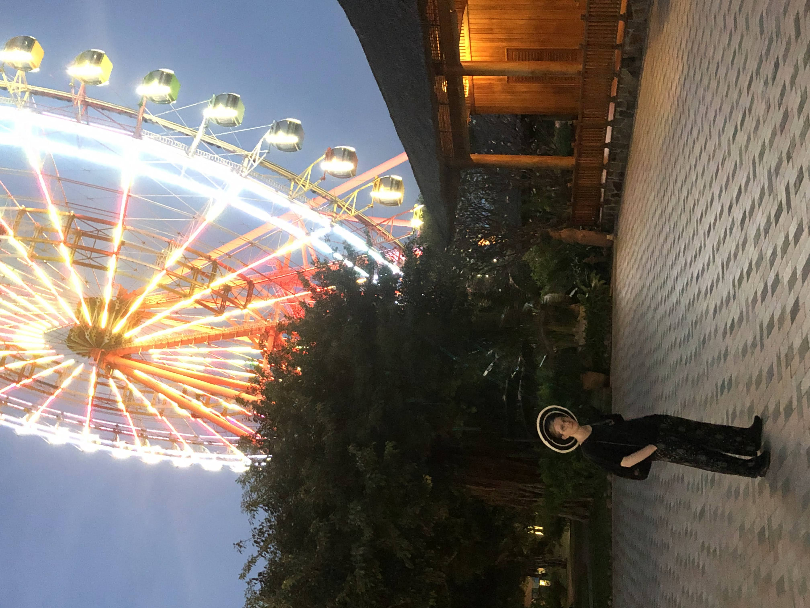

Lightly edited diary transcripts
2023-11-07
My bookings for Vietnam really were a mess. I missed 2 hotels, and booked 2 hotels for the wrong dates — one by a month, not to mention the flight I forgot to book from Haiphong to Ho Chi Minh at the end, or the flights back after worlds I booked on the wrong day, or filling in the wrong flights to get picked up from the airport for for worlds. Luckily Emma messaged me about sharing, and that prompted me to check and fix it. Truly though, it was a mess.
2023-11-27
I woke up early, tired, and then I spend the next few hours packing and preparing for my trip. And now I’ve spend hours sitting at the airport, filling out painful job applications. I’m about to go on a month long adventure, but first it starts with sitting around in a building, sitting around in planes, and paperwork. I think it’s making me more excited though. I can get on the plane and leave all this drudgery behind.

I got the best seat. I watched them load the baggage in the light of sunset, and now I’m staring at the flaps as they move. Watching the wings twitch, wobble and stretch. The hills and clouds illuminated by the golden light in the background. It’s gorgeous. I’m getting excited. And now we’re taxiing, I can feel it pushing me back slightly. I’m getting excited for the launch sequence moment. Now we’ve turned, and the storm clouds are light around the edges. The tops always look so serene. It was so smooth this time, no bumpiness. Just forwards and up. And now we’re in the clouds. It’s amazing here. We’re still climbing sharply. It’s so peaceful. The roar of the engines isn’t too loud, it’s a deep rumble. It’s just right And now we’re over. The clouds are a flat layer. The city is beneath me. Everything finally feels like it’s going the way things are supposed to go. Magic is returning. And we’re still going higher, it feels like this is higher than normal. I can see that shadows on the mountains, stretching over the landscape. And the clouds like a cloak. Imagine the mythology we could have had if we’d planes 10,000 years ago. We’re levelling out now. It’s so high. I can see over the other side of NZ (I think).
2023-11-28
The sun is rising in Guangzhou, this yellow orb on the horizon. But unlike at home it’s not so bright I can’t stare at it. Through the layers of smog it’s yellow not retina-overload white (although it’s getting there as it rises). I can stare at it, with dark afterimages rising above it like smoke. And it’s moving so fast, perhaps because I’m on the equator. It’s smoother and smaller than I remember. And now I’m starting to get longer lingering black spots when I stare. I’ll try not focusing on it
There’s trees in the distance. But far more buildings. And the sky is grey.
2023-11-30
Today we explored a Ho Chi Minh. We went to the contemporary art museum and the huge market. I realised I’d booked my bus for the wrong day (that’s 4 occurrences of misbookings this trip). And then the first 2 buses I tried to book didn’t go through. But now I’m on the bus. For the first time here I’m mildly, barely too cold.
2023-12-03
It’s been a busy few days. I’m currently on the train out of Nha Trang to Dong Hoi.
We got in at about 04:30, smelling of many things. Covered in sweat, bug spray, sunscreen, more sweat. We made our way to the hotel, dropped our stuff and wandered Nha Trang. That evening we ended up going to the night markets, where I got a black circular straw hat with 2 white bands. I did a little haggling and got it for about half price. I could have gone further but the whole market was pretty overwhelming and stressful.
The next day we wandered around, and ended up getting a boat to and island. We hung out on the beach, had beers, and enjoyed life. It was the first real time we’d sat down since we got here. I’ve been stuck stressed for months, but this was the first crack.
The next day we had intended to book an island hopping boat, but looking on maps we realised the only one really worth going to was the one with the resorts on. Turns out that the only way to get on is to get a ticket with the company that’s basically colonised it, so we got a ticket. It turned out to be about NZD$50 for an all access pass. Also turns out that basically the only thing to do on the island was the theme park.

Luckily, it was better than disneyland. There were basically no queues, everything was actually affordable, and the rides were 80% as good. We started with the action section, which was mostly closed or bad. There was a fun rollercoaster, although the main one was closed, and there was a cool zipline, but that had an actual queue and we never came at the right time. We did go on the luge though. It was really good. The first time I was stuck behind someone slow, but the second one I went slow at the start so I could blitz it down the rest. That was great. After that we wandered a bit and went to the water park. Again, almost no queues, a few closed rides over lunch (which we went back for), and some really cool ones. There was a waterslide with jets for short uphill sections, and a couple of dark ones which were great. There was also a wipeout-like setup with inflatables on the ocean, which were surprisingly difficult to pull myself up on — especially as I missed the ropes to help you get yourself up. I didn’t realise how little I could get myself out of the water just by kicking. It makes crocodiles even more impressive. At 5:30pm the water park all began to close, and by then it had begun to get barely cold. So we went on the ferris wheel. It was almost as high as the London Eye, and it was on a hill so we had amazing views of the city over the straight and the whole park. By then it was sunset, so the whole part was lit up, and the lights on the castles made it look absolutely incredible.
The morning we got up early to walk up a hill. I’d got a bad sleep. There were a series of 3 peaks, and we were originally going to just do the first, but when we got to the top we saw the next one was pretty close. I let the others convince me to go on to the next peak, especially as there were a gaggle of kids with matching Vietnam shirts on our tail. The second peak turned out to be much easier than the first, aside from one somewhat steep section. And once we made it to the top of that, the third was just so close. By this time I was awake. So we went on. The third one was also easy. It was crate day, so we’d each brought a can of beer. Mine wasn’t great though, but the view mostly made up for it.

In the evening we again went out, we ended up drinking on the beach and eating ice cream. We got some cocktails that were basically straight alcohol and watch the waves crash out from the darkness. The light of Vinpearl (the theme park we went to) lighting up in the background. It was perfect.
I’m in a cabin with Hollie and Anton, and we’ve spent the time chatting, playing cards, and watching the scenery go by.
The train has been stopped for a while now. Power went out, and then the whole cabin lurched 3 times, then stopped. Something is probably wrong.

2023-12-07
I’m on the train out of Dong Hoi. I’m the only one in my cabin, and it’s night. I have chocolate and oat biscuits. Things are good. This train is more modern than the previous one. I selected the same seat as last time, hoping to be in the same cabin as Hollie and Anton, but they’re in the corresponding cabin in the next carriage. Apparently there’s an old Vietnamese couple who were shocked to see them. The old man yells into the phone when he makes calls.
Dong Hoi was good. Relaxing. We got free upgrades at our hotel. The people running it were absolutely lovely, although I did get the vibe we irritated them a little. I guess we are tourists. We did a lot of walking, soaking in the ambience. In the end it was about 20,000 steps. We saw a cafe with a koi pond in the middle. The fish were so shiny, but that was a little undermined by someone welding on the other side of the pond.

Then we went to the caves. It was more expensive than 4 nights accommodation, and more expensive than Vinpearl. But I think it was still worth it. That morning I’d had to get up at 05:30 for a unpleasant interview with a recruiter, so I slept on the way there. Our van wound its way through the foggy mountains. The bush here is fascinating, the leaves droop all the way down, like a layer of moss has been dropped over the forests I’m used to. Apparently tigers used to roam these areas. Looking out into the dense forest I was scared at the thought. Once we made it to the cave entrance we descended the stairs into the rock. I have to admit, on the way up the mountain — sore, sleep deprived, and maybe ill — I was doubting if it was worth it. And then it opened up, and I could see a space hundreds of metres wide. The roof of the cave stretching out above me. It was breathtaking. To have such a space hidden away filled me with this feeling of otherworldliness. The cavern was lit up, and looking down at a viewing platform ringed with lights it felt like I was witnessing a ritual site. We walked in, and saw the different textures on the rocks. I thought of ancient humans coming down to similar spaces, seeing things that looked like warped version of the things they know. Melting faces and giant animals, all of it illuminated by the flickering torch light. Perhaps they were taking drugs as part of a ritual. No wonder they saw gods. I almost felt gods and I have the all the advantages of the modern day. There were arches that looked like giant hallways for something correspondingly giant. Pools of water that reflected no light, like portals through to the void. Some stalagmites had water running down them, dripping and glistening. We made it to a space nicknamed the cathedral. Enormous, with steep walls and a wide crack in the ceiling, and no stalactites or stalagmites. I made the cathedrals above ground seem like imitations. The variation in texture was fascinating. Smooth and blobby, rough and undulating, flat and almost transparent. All from the same simple forces. The human mind is good at finding patterns, and this cave (Paradise Cave) gave just enough dots for my mind to make any pattern it wanted.
After that we had lunch, which was nice. It came on a giant leaf.
And then we ventured into Dark Cave. We were fitted with life jackets and helmets, and we ziplined in. From there we walked and swam over rocks and through a frigid river. The roof rose over us, steep and straight to a line. We had headlamps, but they couldn’t cover everything. We made it to the other shore deep inside, and from there a pathway lead further. We continued on through a narrow passage. Seemingly just enough for us to pass. Narrow and so, so tall. I didn’t see the top. And then we emerged. The space felt like an afterthought, just there. Like a reasonably sized, but misshapen room. And in it was mud. Squelchy and tactile. It sucked you in and rested you leaving. We turned our lights off, and it was dark, in the true sense. Like my eyes had been removed. I wanted to revel in it but Hollie was scared. I understand, I would have been once my mind caught up. Some cultures believe humans come from the dirt and mud. This is that mud. Million year old mud, in the backrooms of the earth. A mountain on top of us.
Eventually we made our way out, back to the sandy shore inside the cave. Back through the frigid river, washing the primordial mud off. Avoiding rocks.
Further up the river were ziplines, waterslides, and floating platforms. So, with those mountains like something out of fantasy in the background, we played in the river. It was simple. It weird. It was lonely, so isolated from the world. It was peaceful. It was fun. It was odd to just hang out in the space that felt so important.

I am on a train.
There are rattles and chatter echoing in the distance. This machine is bigger than I can see and feel. But no so big that it lasts forever. But I am in my cabin. And the world, so vast, beautiful and scary, is out there.
The train had 3 lights on the front, as it pulled into the station. Something alien out of the distance.

2023-12-08
I like anticipation. Sitting in the train I’m not really doing anything, but in 20 minutes I will have to rush to get a taxi, to sit for 40 minutes, to rush to get a bus ticket. If we don’t get those tickets we’re pretty fucked. But mostly a lot of sitting
2023-12-09
I am in Ba Be National park. It was a journey to get here, but it is worth it. I am exhausted.
2023-12-16
It’s been a while since I wrote. I’m now on a sleeper bus out of Ha Giang. I won’t be on it long enough to sleep on though, just 6 hours.
Picking up from last time, we got off the train, and rushed to grab to the bus station across town. Along the way I saw a whole pig on a spit, just by the road. Once we made it there we had a bit of a mad rush. We couldn’t find the bus we were looking for. Supposedly we only had 15 minutes to find the bus and get on, we made it with 3 minutes to spare. Turns out we had at least another 20 minutes. It was a public bus, so we weren’t even able to book it online — extra sketchy. It was interesting though. It seems it also served at a postal service, stopping by the side of the road to pick up various packages. There was also the person handling the tickets and packaging, who would periodically open and lean out the door to yell at passer-bys — I am still unclear why, it seems reasonably unlikely that people would hop on an hours long intercity bus on a whim.
The ride was bumpy and not particularly fun. Part way through, feeling nauseous and fearing dehydration I had 2 mouthfuls of water. Soon after I felt the consequences of that decision in my bladder. I managed to dissociate for the remaining 3 hours, as everyone else got off. In the end the bus pulled into some mechanic and we departed. We were about to walk down the road in search of food and toilets, but one of the men stopped us, so we sat and had not very good tea with them. They offered us a hit of their bongs (each a metre long), but we declined. Eventually a van came by, and they bundled us into it. That van took us about 10 minutes down the road and kicked us out on the side of the road. We decided that someone knew what they were doing, so we sat and talked with the assembled group of children. They were very excited by our presence. The boy leading the diplomacy revealed he was 12. He then offered us a cigarette, or failing the hit of one of their 2 bongs (again, each a metre long). I think our rejection confused them. They then called us all beautiful, and left — 3 or 4 per scooter. A close second in moped bingo. Through the trip we’ve been playing moped bingo, trying to find the most absurd things on moped. So far the best has been an entire, wrapped Christmas tree. We got talking to someone closer to our age, with a better grasp of English. We let slip we hadn’t had a type of fried bread/fruit thing, and he was so aghast he insisted buying us each one before leaving. Then we talked to the older people there, who again had the same questions, how old are we, where are we from, why are we here, how do we like Vietnam. This continued on until yet another van pulled up, and they bid us goodbye. On this van there was once again many things and people. 2 seats had been removed to accommodate a pair of mopeds. There were sacks of onions, and boxes of things. And again we set off. Passing things in and out by the windows, picking and dropping people off.
At one point the package man dawdled when dropping off one of them, seemingly to flirt with the pretty woman he’d given it to. The van began to move slowly, so he hopped on, then leant out the window and continued with his flirting until the driver yelled at him and he pulled his head in. Slowly the people and things on the bus dwindled, until once again we were the last people on the bus. We were pointed down to the wharf, so we waited. I ate my fried thing, and it was delicious. Eventually a man came to us, and we got onto his boat. It was long, blue, skinny. It sat low to the water. We sped around the curve of the lake. I looked back as the sun set over the hills. It was a perfect moment. We landed at another jetty on the other side of the lake, and we were directed to mopeds. They loaded our packs onto one heroic scooter, and we each sat behind a rider as we scooted along the dirt road. Finally we arrived. It was a 2 storey wooden building. We dumped our stuff. They served a feast. It was excellent.
I’m writing this on the bus back to Ha Giang. I need to use the bathroom, desperately.
Just as I wrote this we stopped for a snack/bathroom break. Life is good.
The next morning we went on a hike. There are only a few people who spoke English and they were busy, so our guide had to communicate through meaningful looks. However, after 10 minutes we bumped into another group from another hostel with a guide who spoke English. They were 2 Australian pharmacology students and they were cooll. Their names were Larissa and Ryan. So we continued up. It began as just a slightly worn route behind someone’s house. We soon reached a clearing with grapefruit trees, so the guides knocked some down and then laughed as we didn’t know how to eat them. We continued up, at points there wasn’t even a clear path, just a subtly less dense jungle. The hills are much steeper here, it’s very dramatic. We continued on, and we came across a farm. There were cows with nose piercings, and a lot of ducks. To the left the mountain stretched up, covered in dense jungle with the canopy spilling down the sides of trees. Closer to us the there was a small shack, and beneath that vividly green terraces. To the right the valley unfurled into the distant clouds. The fields coated the bottom, and there were a few houses tossed among them. We stopped for lunch in the next village we encountered. Apparently there are only 2000 people in the whole area around Ba Be. The food was of course, excellent.
We continued on, and it really seemed like we didn’t have a plan. We were just wandering. We saw some other villages and walked along a stream. We ended up walking through a small valley, along the walls that divided rice paddies. There were puppies and piglets which everyone loved. But then we had to go through the pig pen, past the piglets sucking from the sow’s teats. As we got close all but one of the piglets scattered, and the sow eyed us. On the other side was a bamboo forest. We stopped for Ryan and Anton to get sticks made by the guide. This took 20 minutes. After 10 minutes of walking they realise they were useless. Our trek continued on, my favourite bit was when were almost climbing up rocks on the side of a mountain. It felt like Indiana Jones. Our host wanted bamboo to make netting out of instead of plastic bottles, so we each got a stick. They were definitely not helpful. From there we went down the hill, and I almost fell over. We ended up at the back of someone’s corn farm. We walked back, talked, and looked at the huge cliffs by the road.
When we got home we split and napped. Later when we went down for dinner, they stopped and directed us to the kitchen/living room. So we ate with the owner, his wife, and his mother. It was of course excellent. And thankfully, I didn’t mess up using the chopsticks. We had an early night that night.
The rest of the trip was much faster paced, with less travel time. Because of this I didn’t write as much in the moment, and so from now on it’s after the fact memories.
The next morning we got up bright and early to get to the wharf. We arrived, and there among the mass of boats we saw our man. He waved and we clambered onto his boat.
We pulled out, and stared. The morning mist hadn’t burnt off yet, so it hung over the water like it was too scared to dip its toe in. The mountains sheltered us, and I could see layers of peaks fading into the distance. We skipped across the waves and curved around the lake. We took a right down a route I thought was a dead end. Coming to a fork we went right, down a valley that was too perfect to be real. Eventually we came to a cave, and pulled up. Of course there was a stall selling Pepsi and other food. There was also a footpath through the rocks. It was concrete, and it looked like it could be 100 years old. Part way along it we heard a chattering from the ceiling. To be fair it was incredibly freaky. On the other side the path split. To the left we could stand on high up rocks to see out the cave. There was more gorgeous valley. The other path lead down to a beach, still in the cave. The river continued around the edge, and we were lit up from the cave entrances in front and behind us. In the sand were messages, and above us was a giant hole in the ceiling. We heard more bat noises, and I half expected a giant one to drop from the giant hole. We headed back to the boat and Anton got a mystery meat skewer. It tasted like 'chicken' (I’m suspicious). Loading back on the boat we turned back, and when we made it to the fork we took the other path. On this side the valley was mistier. We came to a stop at some stairs into the water. At the top was a restaurant. We ate, and it was good. We came out and looked a little confused until someone pointed down the path along the river. Following it along we came along a lookout at a waterfall. I didn’t quite realise how big the river was until that point. Heading back the owner waved us over.
The owner was sitting at a table with half a dozen of his friends. On it they had some weird snacks, they looked and tasted like very hard sticks. We then noticed the measuring jug and shot glasses. One by one they took turns to pour a round of shots. We then drank those, and the next person poured. And so it proceeded. The rice wine was good; it had kick and burn, but not too much of an aftertaste. In between we’d vaguely gesture to communicate. Sometimes someone pour one on one shots. Eventually there was a point where we couldn’t take any more. So they pushed and we had a few more. I think in the end I had 13 or 14 shots. I think Anton had about 16.
Eventually the owner decided it was time. We probably looked sloshed.
We loaded back onto the boat, somehow without falling into the river, and he drove us back. He seemed experienced at this sort of thing.
We got back to the dock, and he waved us off. We stumbled back to the homestay. I fell asleep. It was about 3pm at this point.
I woke up in time for dinner, which was in many ways a repeat of the night before. I looked a little panicked when he poured me another shot, which made them all laugh.
The next day we’d decided to go biking that day, but I felt bad for some inexplicable reason. The others headed off in one direction while I stared at the mountains and tried to stop them moving.
Around lunch they came back. We started biking in the other direction, over the dirt road and up and down the humps. I learnt that my gears and one brake didn’t work. We biked past heavy equipment working on the road. It seemed like they were widening it and upgrading it from dirt to gravel. And then we passed a school, complete with yellow text on a red background, stars, and a soviet-realist sign advocating for something.
We tried to find somewhere to swim, but there was nowhere good. so we hired a boat to take us to an island in the lake. The island turned out to be a large rock, and the rock turned out to be a great place to swim from. Someone had set up lights that I never saw turned on. There were trees, a somewhat sheltered place to get changed, and high points to jump off. We swam, we chatted. I posed. I looked like a drowned rat (with faded blue hair). The top layer of the water was warmed by the sun. It was so quiet. I spent a while floating.
Eventually we went back on the boat, back to land, and back to the hostel. We relaxed, had dinner, and got an early night.
Which was a good thing. The next day we had to wake up early to get the boat to get a bus to Thái Nguyên to get another bus to Hà Giang. A rather unfun day in all. I did lots of reflection on my life in the bus. But I’ve forgotten it now, so it can’t have been that insightful. But I remember feeling very wise at the moment. Like I’d grown.
When I got to my room I found there was a hole in my bathroom. About the size of a pizza box, straight through the wall to the outside of the building.
We got talking to one of the people there, who I have since forgotten. We learnt that to to the Ha Giang loop properly, you really need to do at least 4 days — we had 3 — and it’s much better to drive yourself — you don’t have to hang on the back of a moped all day, or pay a driver — but there were police who will stop foreigners without licences and fine them. The fine wasn’t huge, but Hollie had got a job as a diplomat, and international crime is not a great way to start a career.
In Ha Giang we spent the time going to cafes, wandering, and going to resturants. On the first day we went to a rooftop bar for lunch, and ended up drinking until past dinner. The next day we walked again, got pizza rolls (amazing), we spent an afternoon painting models, and in the evening we went to another rooftop bar.
The next day we had to get the bus out. We lugged our bags halfway across town, early in the morning. Eventually we made it to the pickup point, we loaded onto this small bus which toured around town getting passengers. Eventually it took us back to the bus station to get onto the sleeper bus. The bus station our hotel was directly next too!
The bus took us to Hanoi, and at this point of the trip Emma joined us.
On the first night we went to a bar, there was live music and what seemed like friends of the young performers recording them. As we were paying and leaving the bartender asked us how we, white people, had found the bar (google maps) and then poured free shots for us and did one with us. It was great. We got more drinks and bahn mi on the way home from the bar.
We were going to go to Ho’s grave, but it was closed. Apparently you’re not allowed to laugh there. We went to a buddhist temple island instead. We went to a climbing gym, and got street food.
Anton took Hollie and I to a football game, which was excellent. I really liked bundling up in the cold with friends, screaming about something that didn’t matter but was very exciting. It was one of the highlights of the trip. We got more banh mi on the way home.
We went to the markets, and I haggled down the price of a sweater because I had underestimated how cold Hanoi was. On the way to the giant market we walked through streets of identical stores. There was door handle and tap street, balustrade street, novelty magnet street.
Walking around the city was great, mostly. The traffic and smog was awful, but there was so much going on. Train street was cool, and we got a great picture.
Hollie, Emma, and I got suits. They look so good.
Anyway, another day we went for a walk around the lake, got mediocre coffee, and saw the water puppet show. The show was pretty good, although I was drifting between sleep and wake. It added a dreamlike quality to the whole affair.
We then got the bus to the ferry to the bus to Cat Ba Island. There were lanyards and people herders who seemed used to dealing with tourists as stupid as cattle. I had to pay to use the bathroom which was outrageous.

So we made it to the next hotel. It was a vegan hotel, and we bumped into some Kiwis. It was tourist central. Except that it was Vietnamese winter, so it was quiet. Unfortunately that meant it actually got cold. I ended up buying a 'genuine' north face puffer after a lengthy haggling process.
The first day we went for a boat tour. It was miserably cold in the morning, and fairly cold in the afternoon. We were on a small boat, and sitting on top thr wind blew straight through me. But the people were interesting. There were some European tourists, and a bunch of middle age people. The first stop was on Monkey Island. There were 2 monkeys, each about the size of a cat. We then went on a walk/climb up the rocky hill which was great fun. There was a dramatic, spiky rock peak with a great view out over the island and the sea around. Monkey Island had a beach on one side, with dead shell sand. On the other side were steep cliffs and battering waves. In the middle was a tree coated ridgeline, presumably containing more monkeys.
Back on the boat the europeans decided to play christmas songs, which was too far for me. I retreated down the steps to watch the waves.
Eventually I got bored and trudged back up the stairs in defeat. At which point I got mocked for being a grinch.
The boat stopped and we jumped off the side and swam.
After lunch we hopped around island and did some kayaking
With the sun falling we retraced our path, shortcutting all the stops we had made in the morning.
The next day we went for a hike. A taxi dropped us off, we had general instructions half remembered, and some water. It was great. The path was clear enough, I suppose. Mostly dirt, and some sections navigating rocks. There was one part where it seemed a cliff had collapsed and buried the trail. So we had to guess where to go, and scrabble over it. The entire time we were playing stupid games, like trying to name food that started with each letter, and then breaking the rules — A moldy sandwich for A.
After a while we started to get hungry, and we heard music through the forest. The path split and we had to guess. Fortunately we decided right, and came to the village. We decided to walk around town. It was interesting, despite having maybe 20 buildings, it had a fully paved road, a lake with water management infrastructure, and multiple restaurants. We did a lap of the small lake, it took 3 minutes, and for some reason it had a ring road. I napped and the others trekked back into town. When they got back minutes later they mentioned seeing the tiny feet eating fish. They asked if they could try and the owner didn’t seem to care. I was reluctant, the water was cold, but they convinced me. I remained still despite the tickling sensation. It was interesting, it would start slow and the longer you remained the more would summon the courage to munch on your feet. I could feel the tiny bites, but not in a way that would hurt. When I eventually got bored and took my feet out I could see slight dimples.
We rode out on bikes. Mine had no working gears and half a working brake, and the others' were basically the same. The road looked out over flowering forests and dramatic cliffs. We raced uphill, and as we crested another group passed. Anton and I zoomed by, ending in a photo finish. The forest fell away and the road stuck to the cliffs along the ocean. The steep mountains created a narrow valley. There were two shops and a pier. Someone took our bikes and we looked at the wares. I got a matching PJ set for Emma. We had decided to a Christmas t-shirt exchange, and Emma wanted egregious knockoffs. I’d been hunting, and despite being absolutely ripped off I had to get this set. It was styled after Gucci, but instead of Gucci it said CCCUI.
I boat took us to the same port as the previous day, except this time there was no bus. A woman lead us, she looked authoritative, so we followed her. But soon she stopped and pointed us further. Then she made some gestures we later decoded as right left left. So we walked back to the hotel and only got a little bit lost.

The final day on Cat Ba we went for a moped ride, and got scammed.
The scooters were on the verge of crapping out. The speedos didn’t work, and the engines were noisy. We set off. Anton was confident. I was foolhardy. Hollie was trepidatious. The tanks were almost empty, but we were shown directions to a petrol station. So of course, about a minute in when someone drove in front and said "gas! petrol!" we followed them. They took us to a shell of a building. Someone came out and filled our tanks from drink bottles, and we paid, in retrospect, far too much. We continued on blithely. We passed the petrol station we were go to and didn’t even clock it.
We went to some caves, much smaller the cave in Nya Trang. We saw bats, and delved into an underground world. It was a much more claustrophobic experience. It was at the back of someone’s house, and there was some minor abandoned mining equipment. It was this odd type of horror. A missing way of life, that I’m honestly glad died. It made me understand that I was not meant to be there. There was a battle going on in my mind. The intellectual curiosity wanting to go deeper, overriding any other sense of fear. But then it got boring when we reached the end. The walk back properly let me soak it in. We then went to another cave. This one was used in the war as a hospital. The concrete construction and narrow corridors really made the horrors of the war hit home.
We continued on. We drove down the same highway as the day before. A raised road cutting through a forest. The canopy was a golden yellow, and I think I saw birds fluttering around — then a bug flew into my face. We came to the same national park as yesterday, and took a different path. We hiked up an absurdly steep hill. We bumped into some people from the boat. And then, at the top we could see over the ranges. Mountains and forest stretching forever and ever. There was a sign on a rock just past the peak, and pole stuck firmly in the ground. Seemingly so people could hold onto something as they stood and looked over the cliffs. I scrabbled out part of the way, I thought it was fine but Hollie was nervous. She was probably right. The wind in my hair was nice. As we to turned to head back I realised my moped key had fallen out of my pocket. After a small panic I found it siting in a crack in the rocks. It was so lucky that I realised when I did, and that it didn’t fall off the edge. That night we got rooftop cocktails from a bar playing jazz remixes of b-tier pop songs. Walking along the waterfront we found a section of the promenade blocked off. We saw kids zooming around on carts and decided to go. They were electric drift trikes, and they are some of the most fun I’ve ever had. They’re so fast and rickety, and I almost crashed a few times. After my time was up I had so much fun that I decided to go again. This time they gave me an even faster and even more rickety scooter. I rolled it multiple times. I crashed into the fountain, a sign, a bush, and almost some small children. I was doing burnouts and trying not to tip it when they came over and stopped me… To give me an even faster and even more rickety one! There were 3 kids on 1 scooter and we raced across the blocked off sections. My scooter was faster but they won the first one because they didn’t spin out. I almost won the second one but then I smacked into a bush again.
When I woke up the next morning my phone was broken.
The ferry ride to Haiphong was fascinating. There was this migration of well over 100 boats of varying size. From 2 story affairs, to colossal 8 story ones dragging tiny support boats with them. It was like a migration, and every time I thought it was over there were more. Somehow it all worked out so there was a gap just as we crossed across their path. Then just after we got off the ferry and walked up the ramp a seaplane landed and taxied up behind us, then continued on. So that was fun.
Our penultimate hotel was in Haiphong, but this section seemed very touristy. We drove past streets of candyfloss coloured, Parisian style, abandoned buildings. It was bizarre. There was a giant cable car that wasn’t running, and a resturant on it’s 6th consecutive year of grand opening.
At this point it was December 24th, so we set about preparing for Christmas. Of course they don’t celebrate it over there, so everything was normal. We got a cake, made some sangria, and I downloaded Love Actually.
That evening we set off in hunt of a fancy dinner, we found a place at this luxury resort, but the whole thing was a ghost town. There was one person at the giant desk. When we went up to the restaurant we were the only people there. We were able to have a dimly lit meal by the window, like we were crime bosses.
Coming back to the hotel there were a bunch of children. Every year the ownders host a party for their local kids. They were doing karaoke, and chatting excitedly. They had nice food. It seemed very special for them. It was also an opportunity for them to practice English with us. It was loud and I had a headache, so I couldn’t stay all night. I felt bad about that. Then I struggled to figure out the shower.
The next morning was much better. We had a lie in, breakfast, and then we got onto the party. We had food, drinks, and a decent movie. It was one fo the better Christmases. The t shirt swap was fun, Emma liked her CCCUI pjs, Hollie got Joe Biden, Vietnam - We Can Do It shirt, and it was a hit.
We didn’t really do a lot that day. Drink, chat, eat food. It was a good day. That night we got dinner at the grand opening place, I risked the steak, and it was fine which I counted as a win.
The next morning we had a long drive to a building that was wildly haunted. The surrounding area was a semi abandoned light-industrial park. The roads were wide and empty. Going inside it was shadowed. The rooms weren’t much better. No windows, a lock that didn’t inspire confidence. And lighting that was never quite bright enough. At night there were noises in the halls, scraping and banging.
Emma and I went to the mall to pick up some stuff. In the taxi on the way there I tried to put on my seatbelt, the driver just laughed and said "No, no, in Vietnam we die like men". Thankfully we didn’t crash. The mall looked like an alien spaceship had landed. It was a Korean brand, and it was so much shinier, cleaner, newer than anything in the surrounding area.
I wanted to get a haircut, so we set off. The world outside was the opposite of the mall. Dirty, far too many cars, so horrifically noisy and polluted. We found a place, and I tried to explain what I wanted, shave the sides, trim the ends on the rest), but working through google translate was not successful. In the end they didn’t take even take card, and were expensive. So I didn’t go there.
In the morning we got up early to get to the airport. That was it! The remaining time was spent in Ho Chi Minh, debating at worlds. I will write about that later. The whole experience was amazing. So much happened, so much great food and drink, amazing memories. Despite my dismal planning abilities the trip went smoothly. At so many opportunities we got lucky, and the weather was perfect. It really was the trip of a lifetime.